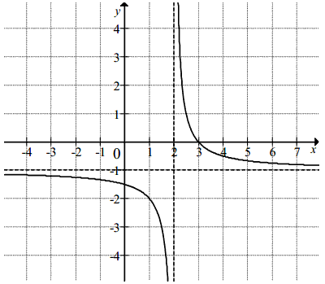
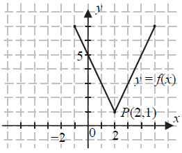

Różne zadania z funkcji
Dana jest funkcja \(f(x)=\frac{x^2+2}{1-b}\). Oblicz współczynnik \(b\) jeżeli
wiadomo, że \(f(2) = -3\).
\(b=3\)
Funkcja \(f\) jest określona wzorem \(f(x)=\frac{2x-b}{x-9}\) dla \(x \ne 9\).
Ponadto wiemy, że \(f(4)=-1\). Oblicz współczynnik \(b\).
\(b=3\)
Funkcja liniowa \(f(x)=(m+2)x+2m\) jest rosnąca, gdy
A.\( m<-2 \)
B.\( m\lt 2 \)
C.\( m>-2 \)
D.\( m>-4 \)
C
Punkt \(P=(a+1,2)\) należy do wykresu funkcji \(f(x)=\frac{4}{x}\). Liczba
\(a\) jest równa
A.\( 0 \)
B.\( -1 \)
C.\( 2 \)
D.\( 1 \)
D
Na rysunku przedstawiono wykres funkcji \(f\).  Odczytaj z wykresu i zapisz:
Odczytaj z wykresu i zapisz:
Odczytaj z wykresu i zapisz: - zbiór wartości funkcji \(f\),
- przedział maksymalnej długości, w którym \(f\) jest malejąca.
a) \(\langle -2;3 \rangle \)
b) \(\langle -2;2 \rangle \)
Funkcja \(f\) jest określona wzorem \(f(x)=\frac{2x}{x-1}\) dla \(x\ne 1\). Wartość funkcji \(f\) dla
argumentu \(x=2\) jest równa
A.\( 2 \)
B.\( -4 \)
C.\( 4 \)
D.\( -2 \)
C
Dana jest funkcja \(h(x)=\left ( -\frac{1}{3}m+2
\right)x+\frac{3}{2}m-1\). Funkcja ta dla argumentu \(0\) przyjmuje wartość \(5\).
Wówczas:
A.\( m=9 \)
B.\( m=6 \)
C.\( m=4 \)
D.\( m=2 \)
C
Na rysunku przedstawiono fragment wykresu funkcji \( f \), który powstał w
wyniku przesunięcia wykresu funkcji określonej wzorem \( y=\frac{1}{x} \) dla każdej liczby
rzeczywistej \( x\ne 0 \). 
a) Odczytaj z wykresu i zapisz zbiór tych wszystkich argumentów,
dla których wartości funkcji \( f \) są większe od \( 0 \).
b) Podaj miejsce zerowe funkcji \( g \) określonej wzorem \( g(x)=f(x-3) \).
b) Podaj miejsce zerowe funkcji \( g \) określonej wzorem \( g(x)=f(x-3) \).
a) \(x\in (2;3)\)
b) \(x=6\)
Funkcja \( f \) określona dla wszystkich liczb całkowitych dodatnich,
przyporządkowuje liczbie \( x \) ostatnią cyfrę jej kwadratu. Zbiór wartości funkcji \( f \)
zawiera dokładnie
A.\( 5 \) elementów
B.\( 6 \) elementów
C.\( 9 \) elementów
D.\( 10 \) elementów
B
Funkcja \(f\) przyporządkowuje każdej liczbie naturalnej większej od \(1\) jej
największy dzielnik będący liczbą pierwszą. Spośród liczb: \(f(42\)), \(f(44)\), \(f(45)\),
\(f(48)\) największa to
A.\( f(42) \)
B.\( f(44) \)
C.\( f(45) \)
D.\( f(48) \)
B
Funkcja \(f\) określona jest wzorem \(f(x)=\sqrt{x+2\sqrt{6}}\). Wartość
funkcji \(f\) dla argumentu \(x=(\sqrt{3}-\sqrt{2})^2\) jest równa
A.\( \sqrt{2} \)
B.\( \sqrt{3} \)
C.\( \sqrt{5} \)
D.\( \sqrt{6} \)
C
Do wykresu funkcji \(f(x)=(m-1)x+m^2+1\) należy punkt \(P=(0,5)\). Parametr
\(m\) może być równy
A.\( 0 \)
B.\( 1 \)
C.\( 2 \)
D.\( \sqrt{6} \)
C
Do wykresu funkcji \(f(x)=\frac{a}{x-3}\) należy punkt \(A=(1,2)\). Wobec tego:
A.\( a=-4 \)
B.\( a=-3 \)
C.\( a=-2 \)
D.\( a=-1 \)
A
Znajdź wszystkie argumenty \(x\) dla których funkcje \(f(x)=x-3\) oraz \(g(x)=-\frac{2}{x}\)
przyjmują tę samą wartość.
\(x=1\) lub \(x=2\)
Dana jest funkcja \(f\) określona wzorem \(f(x)=\begin{cases} x-2\quad
\text{dla } x\le 0 \\ \Bigl ||x+3|-4 \Bigl |\quad \text{dla } x\gt 0 \end{cases} \). Równanie
\(f(x)=1\) ma dokładnie
A.jedno rozwiązanie
B.dwa rozwiązania
C.cztery rozwiązania
D.pięć rozwiązań
A
Funkcja \(f\) jest określona wzorem \(f(x)=\frac{2x-8}{x}\) dla każdej liczby
rzeczywistej \(x \ne 0\). Wówczas wartość funkcji \(f(\sqrt{2})\) jest równa
A.\( 2-4\sqrt{2} \)
B.\( 1-2\sqrt{2} \)
C.\( 1+2\sqrt{2} \)
D.\( 2+4\sqrt{2} \)
A
Na rysunku przedstawiony jest wykres funkcji \(f\).  Wskaż wzór funkcji, której wykres
jest symetryczny do wykresu funkcji \(f\) względem osi \(Oy\) układu współrzędnych.
A.\( y=f(x-4) \)
B.\( y=f(x)-4 \)
C.\( y=f(x+4) \)
D.\( y=f(x)+4 \)
C